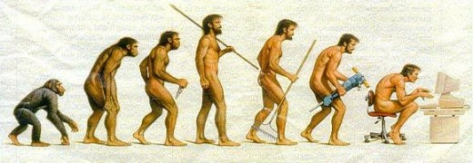
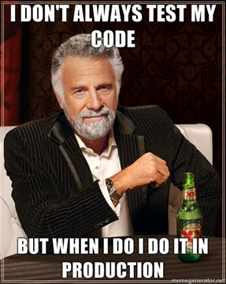

Improve your tool chain for stress-free deployments
Omni Adams
Omni Adams
Glam Media
@omnicolor
http://omni-spot.blogspot.com
omni@digitaldarkness.com
A little bit about me.
I'm Omni Adams. I currently work for Glam Media.
You can find me on the Twitter as omnicolor, check out my blog, or
send me an email. This stuff will be on the last slide.
Now that the boring stuff's out of the way.

This talk is basically about evolving your toolchain.
We basically all start in the same place as coders, writing
hello world programs or code in school with no concept of
source control or tools to make code better.
As we grow as developers, we realize there's more to learn.
And if we're good developers, we'll never really stop learning.
Pretty much all of us starts out the same way.
We're basically a team of one, happily coding along.
We've never heard of source control.

We have no staging environments.
No need to hide in shame, we all did it.

Now if you're still doing it you should be embarassed.

We thought we were elite ninja coders of doom.

How wrong we were.